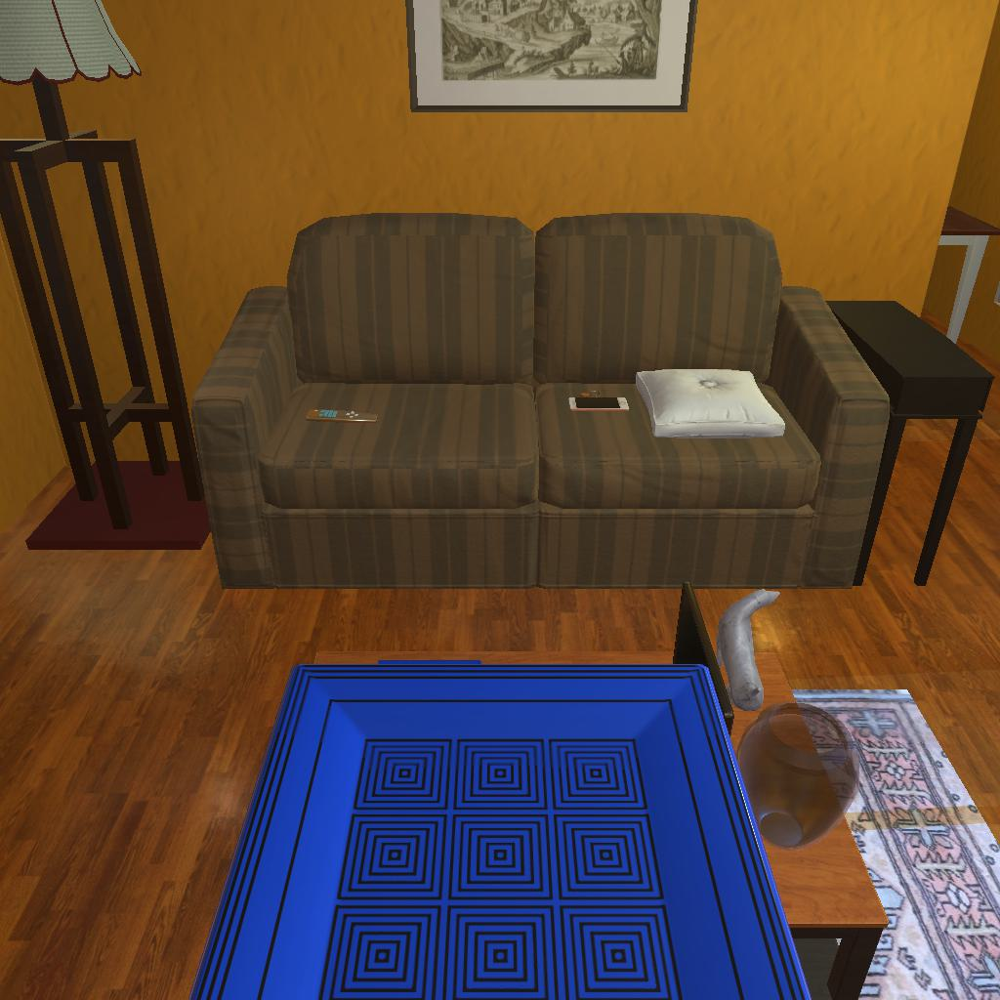
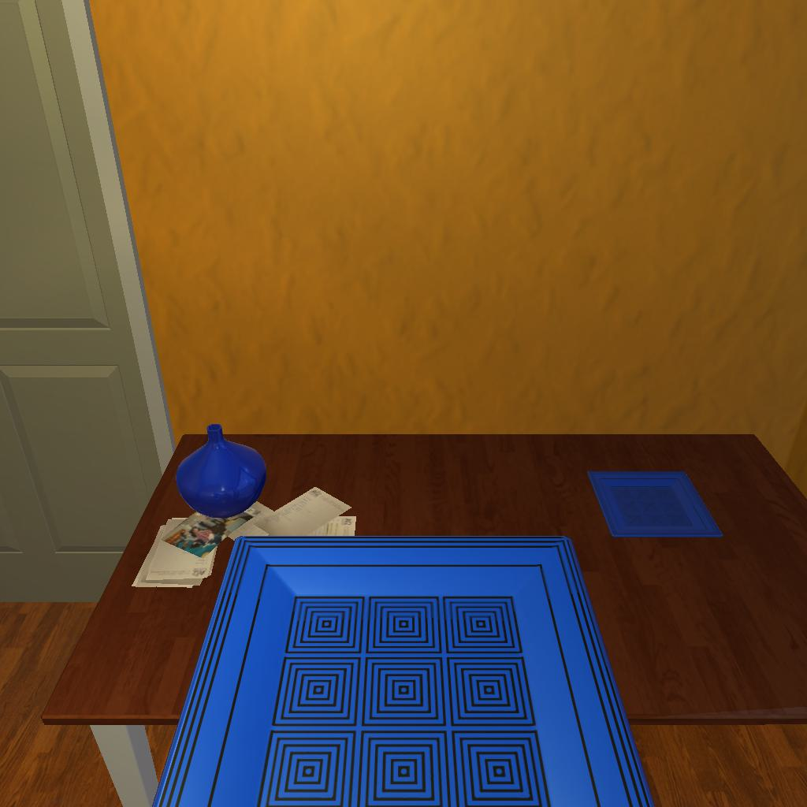

---------------------------------------------------------task: 3---------------------------------------------------------
--------------------------------------------------------------------------------------------------------------------------------------------------------------------
--------------------------------------------------------------------------------------------------------------------------------------------------------------------
Step:--------------------------------------------------------------------------8-------------------------------------------------------------------------------
----------------------------------------
VLM Prompt:
Image1:
Image2:
**Instruction**
1. Analyze the provided images to identify all visible household objects and compare the difference between images (e.h. whether the object is opened or not and taken on hand or not), focusing on those relevant to the task description "examine the plate with the floorlamp."
2. Use the analysis of images and the task hint "The agent must find an object of the desired type, locate and turn on a light source with the desired object in-hand." to answer the question: what is the most reasonable action in the choices for the task description "examine the plate with the floorlamp"?
3. Decide and write the answer using the template: The answer is: (i): , where i is the real number. If there is no desired object in images, search every place based on **Initial Observation** to find the object. And if no one is exactly correct, choose a similar answer.
**Initial Observation**
You are in the middle of a room. Looking quickly around you, you can see armchair (1), garbagecan (1), tvstand (1), shelf (1-5), sofa (1), coffeetable (1), sidetable (1-2), drawer (1)
**Answer Choices**
(1): go to armchair 1
(2): go to garbagecan 1
(3): go to tvstand 1
(4): go to shelf 2
(5): go to sofa 1
(6): go to sidetable 1
(7): go to drawer 1
(8): go to shelf 3
(9): go to shelf 4
(10): go to shelf 5
(11): put plate 2 in/on sidetable 2
(12): examine plate 2
(13): examine sidetable 2
**Answer**
Let's think step by step by following the instructions.
----------------------------------------
----------------------------------------
Original Response:
Firstly, we need to identify all visible household objects in the images:
Image1:
- Sofa with a plate and a remote control on it
- Floorlamp next to the sofa
- Sidetable with a book on it
- Coffeetable with a blue plate on it
- Shelf (not fully visible)
Image2:
- Coffeetable with a blue plate on it
- Sidetable with newspapers and a blue vase on it
- Door (partially visible)
The task description indicates that we need to "examine the plate with the floorlamp." In Image1, we can see a floorlamp next to the sofa and a plate on the sofa. However, we do not have a clear view of a plate with a floorlamp in either image.
The task hint suggests that the agent must find an object of the desired type, locate and turn on a light source with the desired object in-hand. Since we do not see an agent holding the plate in either image, and we know from the initial observation that there is a floorlamp in the room, the most reasonable action would be to locate and turn on the floorlamp while holding the plate.
Since none of the answer choices directly state turning on the floorlamp with the plate in-hand, we must choose the closest action that would lead to the task's completion. The closest action would be to first go to the sofa where the plate is located and then proceed to interact with the floorlamp.
The answer is: (5): go to sofa 1.
----------------------------------------
----------------------------------------
>>> Refine Original VLM Response and Get Pure Action: go to sofa 1
----------------------------------------
-----------------------------------------------------------------
Running time: 15.535301685333252 seconds
Total Money: 0.8672600000000001
-----------------------------------------------------------------
-----------------------------------------------------------------
Text Observation:You arrive at loc 5. On the sofa 1, you see a pillow 1.
-----------------------------------------------------------------
UNSUCCEED